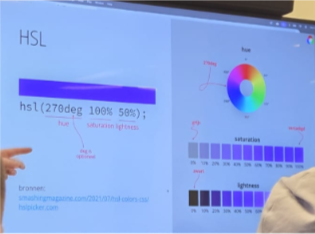
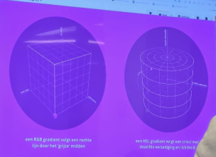
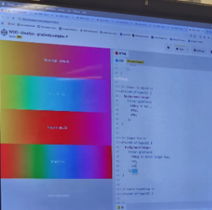

Aantekeningen tijdens de lezing:
Sanne vertelde over kleuren in CSS.
Het verschil in rgba en hsl.
Lees meer...

Hij heeft 2 tools gemaakt om te laten zien wat er gebeurd met rgba en wat met hsl.
RGBA:
HSL: CodePen hsl

Hij liet ze ook vergelijken in een grid:
Gradient samples
@supports and @media
